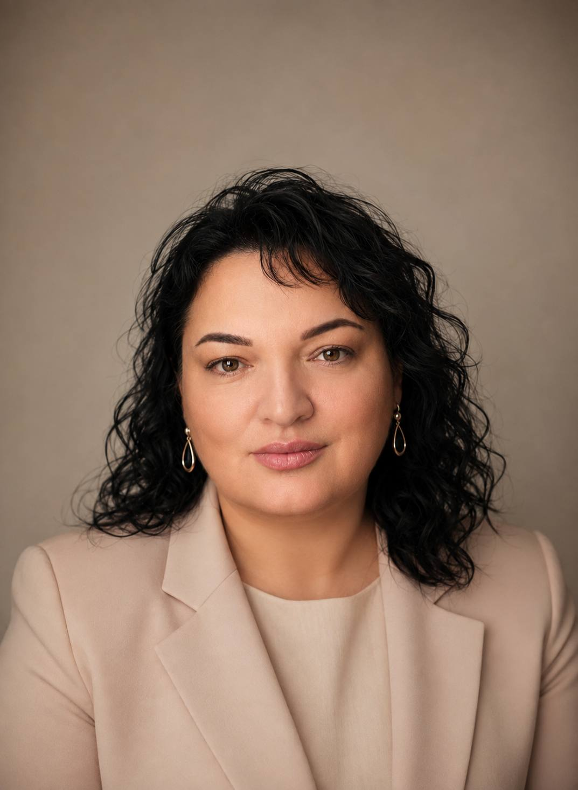

Сатушиева Любовь Хабасовна
Кандидат юридических наук, доцент
Доцент кафедры Конституционного и административного права юридического факультета Кабардино-Балкарского государственного университета им. Х.М. Бербекова
Биография
Сатушиева Любовь Хабасовна родилась 28 января 1977 года в п. Чегем Чегемского района Кабардино-Балкарской Республики.
После окончания средней школы в 1993 году стала студенткой юридического факультета Кабардино-Балкарского государственного университета.
Свою трудовую деятельность начала в 1998 году на юридическом факультете ассистентом кафедры теории и истории государства и права.
В 2001 году окончила очную аспирантуру со сдачей всех кандидатских экзаменов и предоставлением работы.
В 2003 году защитила кандидатскую диссертацию в Нижегородской академии МВД России по специальности 12.00.01 — Теория и история государства и права; история правовых учений.
В 2004 году — старший преподаватель кафедры теории и истории государства и права.
В соответствии с приказом от 13.12.2006 года Кабардино-Балкарского государственного университета им. Х.М. Бербекова Сатушиева Л.Х. была переведена на должность доцента кафедры Конституционного и административного права юридического факультета КБГУ.
В 2012 году в издательстве «Проспект» г. Москва вышла первая монография «Механизм реализации адата на Северо-Западном и Центральном Кавказе: историко-правовой анализ: XV — начало XX в.».
В ноябре 2024 года Сатушиевой Любови Хабасовне было присвоено учёное звание доцента.
Общий стаж научно-педагогической работы — 27 лет.
Профессиональный статус
Фамилия, имя, отчество: Сатушиева Любовь Хабасовна.
Учёная степень: кандидат юридических наук.
Учёное звание: доцент.
Должность: доцент кафедры Конституционного и административного права юридического факультета Кабардино-Балкарского государственного университета им. Х.М. Бербекова.
Стаж научно-педагогической работы: 27 лет.
Основные научные направления: конституционное право, административное право, муниципальное право, теория и история государства и права, правовые и религиозные традиции народов Северного Кавказа.
Общественная деятельность: председатель Кабардино-Балкарского регионального отделения Ассоциации историков права.
Образование
В 1993 году после окончания средней школы поступила на юридический факультет Кабардино-Балкарского государственного университета.
В 1998 году получила высшее юридическое образование, диплом с отличием.
В 2009 году получила высшее экономическое образование, диплом с отличием.
В 1998 году была рекомендована в аспирантуру Кабардино-Балкарского государственного университета и была зачислена в очную аспирантуру.
В 2001 году окончила очную аспирантуру со сдачей всех кандидатских экзаменов и предоставлением работы.
«Механизм реализации адата на Северо-Западном и Центральном Кавказе: историко-правовой анализ: XV — начало XX в.».
Защита диссертации состоялась в 2003 году в Нижегородской академии МВД России.
Научная деятельность
История права и в особенности история обычного права во всем мире изучается как юристами, так и историками. Обычное право на Северном Кавказе в течение многих веков было господствующей правовой системой.
Ни мусульманское право, ни законодательство Российской империи, советского государства не смогли полностью его ликвидировать. До сих пор исследователи, изучающие современное правовое поле на Северном Кавказе, наблюдают применение местными народами отдельных адатных и мусульманских норм.
Ценность изучения данного направления заключается в стремлении России к формированию демократического общества, тесно связанном с соблюдением прав человека, одним из которых является учет правовых особенностей, которые до сих пор имеют место в российских регионах.
Вопрос о возможности утверждения в России правового плюрализма как правовой идеологии вообще и применительно к Северному Кавказу, в частности, стоит достаточно остро.
Логическим продолжением анализа механизма реализации адата на Северо-Западном и Центральном Кавказе явился интерес к исследованию темы докторской диссертации — религиозно-правовой политики на Северном Кавказе.
Исследование посвящено изучению истории основных направлений деятельности России в области контроля над религиозно-правовым полем в регионе в период с XVIII века по февраль 1917 года.
Народы Северного Кавказа сформировали самобытную религиозно-правовую традицию, которая приобрела нравственно-ценностный, межпоколенческий характер в качестве регулятора правоотношений.
Религиозно-правовая традиция народов Северного Кавказа гармонично сочетала религиозные установки, духовно-нравственные ценности и нормативные регуляторы.
По данным РИНЦ, по состоянию на 1 марта 2026 года размещено 127 публикаций.
Научные публикации
По теме диссертационного исследования Сатушиева Л.Х. имеет публикации в российских рецензируемых научных журналах, рекомендованных Высшей аттестационной комиссией при Министерстве науки и высшего образования Российской Федерации.
- Сатушиева Л. Х. Механизм взаимодействия российского законодательства, мусульманского и обычного права на Северном Кавказе // Юридическая наука и практика: Вестник Нижегородской академии МВД России. — 2010. — № 1 (14). — С. 57–60. (0,2 п.л.).
- Сатушиева Л. Х. Правовой статус мусульман на Северном Кавказе в ХIХ веке // Европейский журнал социальных наук. — 2011. — № 10. — С. 381–391. (1,25 п.л.).
- Сатушиева Л. Х. Проблема соотношения религиозного и национального в политике Российской империи на Северном Кавказе в ХVIII — начале ХХ в. // Юридическая наука и практика: Вестник Нижегородской академии МВД России. — 2011. — № 1 (14). — С. 62–68. (0,5 п.л.).
- Сатушиева Л. Х. Формирование правового режима включения мусульман в состав Российской империи (по нормативным актам ХVIII в.) // История государства и права. — 2012. — № 2. — С. 8–16. (1,1 п.л.).
- Сатушиева Л. Х. Правовые основы российской политики на Северном Кавказе в первой половине ХIХ века // Юридическая наука и практика: Вестник Нижегородской академии МВД России. — 2012. — № 1. — С. 87–92. (0,7 п.л.).
- Сатушиева Л. Х. Гражданское общество на Кавказе во второй половине ХIХ — начале ХХ вв.: правовая реальность // Известия Кабардино-Балкарского государственного университета. — Нальчик. — 2013. — Т. 3. — № 4. — С. 84–90. (0,8 п.л.).
- Сатушиева Л. Х. Формирование правового режима для регулирования статуса мусульман в Российской империи в начале ХХ века // Общество и право. Краснодарский университет МВД РФ. — 2013. — № 1 (43). — С. 39–43. (0,3 п.л.).
- Сатушиева Л. Х. Статус национальных культур народов Северного Кавказа в конце ХVIII — первой половине ХIХ вв. // История государства и права. — 2014. — № 16. — С. 16–21. (0,5 п.л.).
- Сатушиева Л. Х. Российское право как инструмент регулирования религиозно-национальных проблем на Северном Кавказе (ХVIII — начало ХХ в.) // Вестник российской нации. — 2015. — № 6. — С. 42–55. (1,3 п.л.).
- Сатушиева Л. Х. Христианский вопрос в российской политике на Кавказе во второй половине ХIХ — начале ХХ вв. // Известия Кабардино-Балкарского университета. — 2015. — Т. 5. — № 4. — С. 125–127. (0,2 п.л.).
- Сатушиева Л. Х. Мусульманский вопрос в российской политике на Северном Кавказе (вторая половина ХIХ — начала ХХ вв.) // Исламоведение. — 2016. — № 1 (27). — С. 51–58. (0,8 п.л.).
- Сатушиева Л. Х. Право и государство в контексте гражданского общества на Кавказе во второй половине ХIХ — начале ХХ вв. // Право и государство: теория и практика. — 2016. — № 1 (133). — С. 36–39. (0,2 п.л.).
- Сатушиева Л. Х. Правовой аспект необходимости развития гражданского общества на Кавказе во второй половине ХIХ — начале ХХ вв. // Вопросы экономики и права. — 2017. — № 111. — С. 7–11. (0,3 п.л.).
- Сатушиева Л. Х. Формирование регулятивных систем Российского государства в религиозной сфере на Северном Кавказе (первая половина ХIХ в.) // Юридические исследования. — 2018. — № 9. — С. 56–64. (1,2 п.л.).
- Сатушиева Л. Х. Процесс правового оформления статуса мусульман в Российской империи в первой половине ХIХ в. и его особенности на Кавказе // Юридическая наука. — 2018. — № 9. — С. 89–95. (0,7 п.л.).
- Сатушиева Л. Х. Основные направления государственной политики Российской империи // Юридическая наука и практика: Вестник Нижегородской академии МВД России. — 2019. — № 4 (48). — С. 93–97. (0,3 п.л.).
- Сатушиева Л. Х. Правовая культура народов Северного Кавказа и принципы Российского законодательства в 1990-е годы: причины всплеска традиционных примирительных процедур // Юридическая техника. — 2020. — № 14. — С. 291–297. (0,8 п.л.).
- Сатушиева Л. Х. Влияние правосознания на содержание гарантии прав и свобод граждан в условиях развития информационного общества // Образование и право. — 2024. — № 6. — С. 67–71. (0,3 п.л.).
- Сатушиева Л. Х. Формирование уровня правосознания в информационной среде посредством обеспечения законности и правопорядка // Образование и право. — 2024. — № 9. — С. 50–54. (0,3 п.л.).
- Сатушиева Л. Х. К вопросу о правовой природе, сущности и содержании религиозной традиции // Образование. Наука. Научные кадры. — 2024. — № 4. — С. 48–51. (0,3 п.л.).
- Сатушиева Л. Х. Кодекс чести народов Кавказа как нравственно-этический регулятор общественных отношений // Государственная служба и кадры. — № 2. — 2025. — С. 40–44. (0,8 п.л.).
- Сатушиева Л. Х. Священное гостеприимство и традиции народов Северного Кавказа: уникальное наследие региона // Образование. Наука. Научные кадры. — № 2. — 2025. — С. 46–51. (0,8 п.л.).
- Сатушиева Л. Х. Об исключительности правового регулирования кровной мести в Российской Федерации // Вестник Московского университета МВД России. — № 3. — 2025. — С. 129–132. (0,7 п.л.).
- Сатушиева Л. Х. К вопросу о периодизации и развитии религиозно-правовых традиций в России: теоретико-правовой анализ // Образование. Наука. Научные кадры. — № 3. — 2025. — (1,1 п.л.).
- Сатушиева Л. Х. О взаимозависимости права и религии в регулировании общественных отношений в Российской Федерации // Вестник экономической безопасности. — № 5. — 2025. — (0,8 п.л.).
- Сатушиева Л. Х. Правовая традиция как исторически обусловленный нормативно-ценностный социокультурный феномен // Вестник Московского университета МВД России. — 2024. — № 5. — С. 151–154. (0,3 п.л.).
- Сатушиева Л. Х. Стратегия государственной национальной политики Российской Федерации на период до 2036 года в фокусе религиозных традиций народов Северного Кавказа // Юридическая наука и практика: Вестник Нижегородской академии МВД России. — 2025. — № 4 (72). — С. 21–26.
- Сатушиева Л.Х. Историко-правовой подход в понимании символов и роли обычаев в их становлении и развитии // Юридическая техника. — 2026. — № 20. — С. 430–435.
Монографии и учебники
- «Развитие российской государственности. Опыт теоретико-правового и историко-правового анализа»: монография / под ред. Н. Д. Эриашвили, А. И. Клименко. — 4-е изд., перераб. и доп. М.: Юнити-дана: Закон и право, 2024. — 175 с. — Автор. с. 33. (2,0 п.л.).
- «Национальная безопасность»: учебник для студентов высших учебных заведений, обучающихся по специальности «Экономическая безопасность». Серия «Классический учебник». М., 2025. — 287 с. — Автор. с. 27. (1,7 п.л.).
- «Религиоведение и основы противодействия религиозному экстремизму»: учебник для студентов вузов. 4-е изд., перераб. и доп. — М.: Юнити-Дана, 2025. — 279 с. — Автор. с. 22. (1,4 п.л.).
- «Общая теория государства и права»: учебник для студентов вузов, обучающихся по направлению «Юриспруденция». 4-е изд., перераб. и доп. М.: Юнити-Дана, 2025. — 631 с. — Автор. с. 40. (2,5 п.л.).
- «История отечественного государства и права»: учебник. Серия «Классический учебник». М., 2025. — 480 с. — Авт. с. 32. (2,0 п.л.).
- «Теория государства и права»: учебник. Серия «Классический учебник». М., 2025. — 447 с. — Авт. с. 43. (2,7 п.л.).
- «История государства и права зарубежных стран»: учебник. Серия «Классический учебник». М., 2025. — 687 с. — Авт. с. 29. (1,8 п.л.).
- «Философия права»: учебник для студентов вузов, обучающихся по направлениям «Юриспруденция», «Философия». 4-е изд., перераб. и доп. — М., 2025. — Автор. с. 10.
- «Типология права и правосознания. Концептуальное единство и многообразие»: монография / под ред. В. П. Малахова, Н. Д. Эриашвили. 2-е изд., перераб. и доп. М., 2025. — 631 с. — Автор с. 24.
- «Развитие Российской государственности. Опыт теоретико-правового и историко-правового анализа»: монография. Гуледани И.Н., Ганина О.Ю., Лановая Г.М., Орлов С.В., Сатушиева Л.Х., Чихладзе Л.Т. Москва, 2026. — Автор с. 12.
Дополнительные монографии и учебные пособия
- «Муниципальное право»: учебное пособие. Нальчик, 2022.
- «Проблемы и перспективы развития публичной власти в условиях конституционной модернизации»: монография. Москва, 2023.
- «Трансформация публично-правового регулирования местного самоуправления в условиях конституционной реформы»: монография. Москва, 2023.
- «Конституционное право России. Классический учебник». Третье издание, переработанное и дополненное. Москва, 2024.
- «Проблемы и перспективы развития публичной власти в условиях конституционной модернизации»: монография. Москва, 2023. С. 367.
- «Актуальные проблемы Конституционного права России»: учебное пособие. 4-е изд., перераб. и доп. М., 2025. — 639 с. — Автор. с. 30. (1,8 п.л.).
Преподавательская деятельность
Преподаваемые дисциплины:
- Конституционное право РФ
- Муниципальное право
- Конституционная экономика
- Правовые и финансово-экономические основы местного самоуправления
- Бюджетные полномочия органов местного самоуправления
- Государственное и муниципальное управление
Л.Х. Сатушиева — преподаватель высшей квалификации. Она творчески ведет занятия, ее лекции отличаются новизной мышления, тесной связью с происходящими в стране общественно-политическими процессами и практикой деятельности.
Научная работа со студентами
Сатушиева Любовь Хабасовна значительное внимание уделяет научно-исследовательской работе со студентами.
Считая начальный этап законотворчества «слабым звеном» современного правотворческого процесса, Л.Х. Сатушиева привлекла внимание не только специалистов Парламента КБР, но и студентов к необходимости более широкого и тщательного анализа идей законопроектов.
Многие ее ученики стали обладателями дипломов на межвузовских и всероссийских конкурсах студенческих работ, лауреатами и призерами, получившими высокие оценки в депутатском резерве Всероссийского конкурса «Моя законотворческая инициатива».
Также неоднократно участвовала в подготовке проектов нормативно-правовых документов и предложений по совершенствованию законодательства и учебно-воспитательного процесса в вузах.
Юридическая и экспертная деятельность
Научную работу Л.Х. Сатушиева осуществляет в неразрывной связи с юридической практикой.
Неоднократно участвовала в комиссиях Управления ФНС России по КБР, Управления ФССП КБР, а также в комиссиях Управления Росгвардии КБР.
Также неоднократно участвовала в подготовке проектов нормативно-правовых документов и предложений по совершенствованию законодательства.
Общественная деятельность
Председатель Кабардино-Балкарского регионального отделения Ассоциации историков права. Член Ассоциации историков права России.
Член Ассоциации юристов России.
Повышение квалификации и награды
За последние 5 лет имеет 15 удостоверений о повышении квалификации.
Награждена Почетной грамотой Кабардино-Балкарской Республики за существенный вклад и заслуги в области образования.
Имеет благодарность Управления Министерства юстиции Российской Федерации по Кабардино-Балкарской Республике за оказание бесплатной юридической помощи в КБР.
Награждена Почетной грамотой Ассоциации юридических вузов.
Имеет благодарность от Ассоциации юристов России.
Дополнительные сведения
Замужем, имеет троих детей.